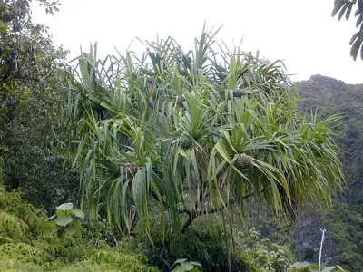

pranet · 出典付きの植物図鑑
アダン
Pandanus tectorius Parkinson ex Du Roi · Pandanaceae

Pandanus tectorius is a species of Pandanus (screwpine) that is native to Malesia, Papuasia, eastern Australia, and the Pacific Islands. It grows in the coastal lowlands typically near the edge of the ocean. Common names in English include thatch screwpine, Tahitian screwpine, hala tree and pandanus. The fruit is edible and sometimes known as hala fruit.
出典: Wikipedia 英語版「Pandanus tectorius」 · CC BY-SA 4.0
異名: Corypha laevis (Lour.) A.Chev., Pandanus absonus H.St.John, Pandanus adscendens H.St.John, Pandanus aequor H.St.John, Pandanus aitutakiensis H.St.John, Pandanus akiakiensis H.St.John, Pandanus ala-kai Martelli, Pandanus amplexus H.St.John, Pandanus angulosus H.St.John, Pandanus anisos H.St.John, Pandanus aoraiensis H.St.John, Pandanus apionops H.St.John, Pandanus asauensis H.St.John, Pandanus ater H.St.John, Pandanus baptistii Misonne, Pandanus bassus H.St.John, Pandanus bathys H.St.John, Pandanus benignus H.St.John, Pandanus bergmanii F.Br., Pandanus bicurvatus H.St.John
同定や利用は自己責任でお願いします。この図鑑だけを根拠に野生の植物を食べないでください。
出典
- 学名: World Flora Online Plant List 2026-06 · CC0 1.0
- 名前: Wikipedia の記事名と Wikidata · CC0 1.0（Wikidata）。記事名は事実
- 説明: Wikipedia 英語版「Pandanus tectorius」 · CC BY-SA 4.0
- 食用・毒性: World Checklist of Useful Plant Species (Diazgranados et al. 2020, RBG Kew) · CC BY 4.0
- 分布: World Checklist of Vascular Plants (WCVP), RBG Kew, version 2026-06-04 · CC BY 3.0
このページは pranet のデータから自動生成しています。コードは MIT、データは項目ごとのライセンス（説明）。